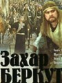
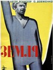
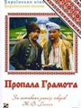
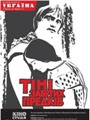

Захар Беркут
За основу сюжету взято однойменну повість Івана Франка.
Землі карпатської громади в наділ отримує боярин Тугар Вовк. Він хоче з жителів села зробити своїх підданців. Між громадою і боярином та його свитою - велика ментальна відмінність:
Дізнавшись про зраду інтересів громади, жителі села засуджують Тугара на смерть. Він із дочкою їдуть до татарів.
У бою коло маєтку боярина молодшого сина Захара Беркута захоплюють у полон. Його наречена Мирослава, Тугарева дочка, тікає до жителів села й викриває батьків задум провести татарів їхніми землями.
Жителі громади влаштовують в ущелині пастку. Але за трагічних обставин разом із татарським військом гинуть два сини Захара Беркута.
Землі карпатської громади в наділ отримує боярин Тугар Вовк. Він хоче з жителів села зробити своїх підданців. Між громадою і боярином та його свитою - велика ментальна відмінність:
Дізнавшись про зраду інтересів громади, жителі села засуджують Тугара на смерть. Він із дочкою їдуть до татарів.
У бою коло маєтку боярина молодшого сина Захара Беркута захоплюють у полон. Його наречена Мирослава, Тугарева дочка, тікає до жителів села й викриває батьків задум провести татарів їхніми землями.
Жителі громади влаштовують в ущелині пастку. Але за трагічних обставин разом із татарським військом гинуть два сини Захара Беркута.
Земля
Фільм О. Довженка «Земля» є одним з найвідоміших радянських фільмів. Цей гімн праці на землі, хліборобству та людині, яка працює на землі, є частиною космічного ритму буття. Довженко першим у світовому кіно виразив світогляд, якісно відмінний від досі зображуваного. Це світогляд нації хліборобської, в якої спокійна гідність зумовлена її способом життя. Середовище і люди — єдине і нероздільне, а їхній спосіб життя є споконвічним, світогляд непохитним. Символіка Довженка була тісно пов’язана зі світоглядом українського народу, з образністю народної поезії. Саме в цьому відмінність фільмів Довженка від фільмів російських авангардистів (формалістів) 20-х років.
Пропала грамота
Героїчна народна комедія з лукавою посмішкою і запальним гумором розповідає про повний пригод шлях козаків Василя та Андрія з гетьманською грамотою до цариці у Петербург, а після цього — про їхнє щасливе повернення в рідну Диканьку.
Тіні забутих предків
Десятки років ворогували два гуцульських роди — Палійчуки та Гутенюки. Але сталось так, що покохав Іван Палійчук красуню із ворожого роду — Марічку, якій судилося прожити коротке, але щасливе життя… Не міг без неї бути щасливим Іванко. Але він жив далі. Одружився. Був коханим. Дітей не було. Господарював. І шукав смерть, яка забрала в нього кохану. Тільки у передсмертному маренні Іван знову набув свого щастя.
Поетичний рефрен картини — три пастухи, що з'являються в переломних моментах дії. Ридаючі голоси їх трембіт надають подіям необхідне емоційне забарвлення, підкреслюючи колорит легенди.
Поетичний рефрен картини — три пастухи, що з'являються в переломних моментах дії. Ридаючі голоси їх трембіт надають подіям необхідне емоційне забарвлення, підкреслюючи колорит легенди.